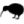

「UltraLog」プロジェクトを主導していた故Zvi Doron氏に深く感謝します。このプログラムは同氏が考案した尺の配置を採用しています。これによって大きな可能性がもたらされていると言えるでしょう。また、この尺配置の使用を了承していただいた同氏のご子息、Yotam Doron氏にもこの場を借りて感謝します。
また、Zviは（本物の）UltraLog制作プロジェクトによって故Hans Dennert氏を追悼する意向を持っていたことをここに記しておきたいと思います。
村上 雅章